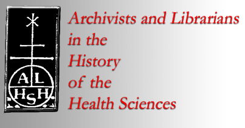

|

Old News (27 April 2015)
Old News (26 March 2015)
Old News (18 December 2014)
Old News (29 November 2014) The 2015 ALHHS New and Renewed Membership Form is available now and throughout the coming year (for membership based on the calendar year 2015). Complete the form online, then save it and send to ALHHS Treasurer Barbara Niss as an email attachment or via snailmail. A PayPal option is available for making payment online; or, checks may be mailed to the Treasurer. Brooke Fox (Waring Historical Library, Medical University of South Carolina) joined the staff of The Watermark as the new Layout Editor.
Old News (14 October 2014) The Fall 2014 issue of The Watermark is available online.
Old News (27 August 2014) The Society of American Archivists' Issue Brief: Health Information Portability and Accountability Act, approved August 2014, is available through the HIPAA Resource Page, under the "Advocacy" section.
Old News (25 June 2014) On May 8, 2014, ALHHS held its 41st annual meeting at the American College of Surgeons, Chicago, Illinois. At the end of the business meeting, Stephen Novak became ALHHS President (2014-2016) as Chris Lyons retired to Past President. Phoebe Evans Letocha (Secretary, 2014-2016), Elisabeth Brander (Member-at-Large, 2014-2016) and Bob Vietrogoski (Member-at-Large, 2014-2016) are the other newly-elected officers. Martha Stone (Treadwell Library, Massachusetts General Hospital) is the new editor of The Watermark. Rounding out the staff are Jack Eckert (Associate Editor), Megan Rosenbloom (Layout Editor), Patricia Gallagher (Book Review Editor), and Jonathon Erlen (Associate Book Review Editor). Eric Boyle received the ALHHS 2014 Best Print Publication Award for his book, Quack Medicine: A History of Combating Health Fraud in Twentieth-Century America (Santa Barbara, CA: Praeger, 2013). Susan Hoffius and Jennifer Welch received the ALHHS 2014 Best Online Resource Award for Porcher Medicinal Garden: Cultivating Our History, an online exhibition of the Waring Historical Library, Medical University of South Carolina (MUSC) Library. Charleston, South Carolina: Waring Historical Library, 2012. URL: http://waring.library.musc.edu/exhibits/PMG/ . Slides from 12 presentations of this year’s meeting now are available as PDF files through the “Presentations” link (http://www.alhhs.org/alhhs_presentations.html) on our homepage. These include the keynote addresses by Daniel Garrison and Malcolm Hast on their new annotated edition of Vesalius; the panel discussion “Medical Archives, Medical Museums, and Medical Schools”; and updates from the membership. Presentations also are linked from the “Program and Schedule of Events”. During the coming year, programs from past annual meetings will be available on the website. We invite speakers from these meetings to submit—with a note authorizing online access—their slides and handouts from these meetings. As more content is added to the site, items will be list both by meeting year and in an alphabetical list by lead author. Contact the website administrator (Russell Johnson) for more information. The STHC-ALHHS HIPAA Resource Page now resides on the ALHHS website. Members of the Society of American Archivists' Science, Technology & Health Care Roundtable (STHC) and Archivists and Librarians in the History of the Health Sciences (ALHHS) compiled this web site to provide information on the Health Insurance Portability and Accountability Act of 1996 (HIPAA) and its impact on historical research in libraries, archives, or other records repositories. The 2014 ALHHS New and Renewed Membership Form is available now and throughout the coming year (for membership based on the calendar year 2014). Print, complete, and mail it (payment may be enclosed by check or made online with PayPal) to ALHHS Treasurer Barbara Niss.
Old News (7 April 2014) The Spring 2014 issue of The Watermark is available online. Editor Steve Novak reports that it contains "the full program for the upcoming annual meeting, news of repositories, book reviews, and much more."
Old News (10 March 2014) The Spring 2014 issue of The Watermark is available online. Editor Steve Novak reports that it contains "the full program for the upcoming annual meeting, news of repositories, book reviews, and much more."
Old News (10 March 2014) The 41st annual meeting of the ALHHS will be held Wednesday, May 7 - Thursday, May 8, 2014 in Chicago, Illinois. The AAHM (American Association for the History of Medicine) annual meeting follows from Thursday, 8 May – Sunday, 11 May 2014. The Winter 2013-2014 issue of The Watermark is available online. The 2014 ALHHS New and Renewed Membership Form is available now and throughout the coming year (for membership based on the calendar year 2014). Print, complete, and mail it (with payment) to ALHHS Treasurer Barbara Niss.
Old News (18 August 2013) The Summer 2013 issue of The Watermark is available online. The 41st annual meeting of the ALHHS will be held Wednesday, May 7 - Thursday, May 8, 2014 in Chicago, Illinois. The AAHM (American Association for the History of Medicine) annual meeting follows from Thursday, 8 May – Sunday, 11 May 2014. The 2013 ALHHS New and Renewed Membership Form is available now and throughout the coming year (for membership based on the calendar year 2013). Print, complete, and mail it (with payment) to ALHHS Treasurer Barbara Niss.
Old News (January 2013) The Summer 2013 issue of The Watermark is available online. Nominations for ALHHS Awards are due 15 February 2013. The 40th annual meeting of the ALHHS will be held Wednesday, May 15 - Thursday, May 16, 2013 in Atlanta, Georgia. Michael North (Bethesda, Maryland; northm AT mail.nlm.nih) will chair the Program Committee and Rachel Ingold (Duke University; rachel.ingold AT duke.edu) is heading up Local Arrangements. The AAHM (American Association for the History of Medicine) annual meeting follows from Thursday, 16 May – Sunday, 19 April 2013. The 2013 ALHHS New and Renewed Membership Form is available now and throughout the coming year (for membership based on the calendar year 2013). Print, complete, and mail it (with payment) to ALHHS Treasurer Arlene Shaner.
Old News (November 2012) The Fall 2012 issue of The Watermark is available online. The 40th annual meeting of the ALHHS will be held Wednesday, May 15 - Thursday, May 16, 2013 in Atlanta, Georgia. Michael North (Bethesda, Maryland; northm AT mail.nlm.nih) will chair the Program Committee and Rachel Ingold (Duke University; rachel.ingold AT duke.edu) is heading up Local Arrangements. The AAHM (American Association for the History of Medicine) annual meeting follows from Thursday, 16 May – Sunday, 19 April 2013. The 2013 ALHHS New and Renewed Membership Form is available now and throughout the coming year (for membership based on the calendar year 2013). Print, complete, and mail it (with payment) to ALHHS Treasurer Arlene Shaner.
Old News (July 2012) The Summer 2012 issue of The Watermark is available online. The 40th annual meeting of the ALHHS will be held Wednesday, May 15 - Thursday, May 16, 2013 in Atlanta, Georgia. Michael North (Bethesda, Maryland; northm AT mail.nlm.nih) will chair the Program Committee and Rachel Ingold (Duke University; rachel.ingold AT duke.edu) is heading up Local Arrangements. The AAHM (American Association for the History of Medicine) annual meeting follows from Thursday, 16 May – Sunday, 19 April 2013. The 2012 ALHHS New and Renewed Membership Form is available throughout the year (for membership based on the calendar year 2012). Print, complete, and mail it (with payment) to ALHHS Treasurer Arlene Shaner. A PayPal payment option may become available this year; stay tuned!
Old News (May 2012) Steven Greenberg (patzere4 AT gmail.com) invites revisions for the ALHHS 2012 Membership Directory, through Friday, June 15. Directory 2.0 will be delivered, to members only, in July. If you have already sent him an update, you do not need to send one again. The deadline for submission of articles and notices to Stephen Novak (sen13 AT columbia.edu) for the Summer 2012 issue of The Watermark is Friday, June 22. Lisa Mix, as Past President, oversaw editing of the ALHHS Procedures Manual. This document now is online, linked from the menu on our homepage. The 40th annual meeting of the ALHHS will be held Wednesday, May 15 - Thursday, May 16, 2013 in Atlanta, Georgia. Michael North (Bethesda, Maryland; northm AT mail.nlm.nih) will chair the Program Committee and Rachel Ingold (Duke University; rachel.ingold AT duke.edu) is heading up Local Arrangements. The AAHM (American Association for the History of Medicine) annual meeting follows from Thursday, 16 May – Sunday, 19 April 2013. The 2012 ALHHS New and Renewed Membership Form is available throughout the year (for membership based on the calendar year 2012). Print, complete, and mail it (with payment) to ALHHS Treasurer Arlene Shaner. A PayPal payment option may become available this year; stay tuned! |